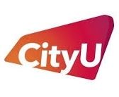
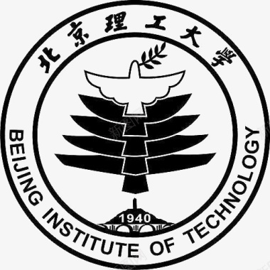

Biography个人简介
Senkang "Forest" Hu (胡森康, feel free to call me "Forest") is currently a Ph.D. candidate at the Department of Computer Science, City University of Hong Kong, under the supervision of Fellow of ACM & IEEE & AAAS, Chair Prof. Yuguang "Michael" Fang. He is also a Visiting PhD at the Department of Computer Science, University of Oxford, working with Prof. Jiarui Gan. Previously, he received his BSc degree from the School of Information and Electronics, Beijing Institute of Technology in 2022.
His long-term research vision is to develop intelligent, efficient, collaborative, and trustworthy LLM-based agentic systems that solve complex real-world tasks and move toward AGI. His works have been published in top-tier conferences such as ICML, NeurIPS, CVPR, AAAI (Oral), ICRA, etc., and top-tier journals such as TMC, TITS, ToN. He also serves as a reviewer or technical program committee member for ICML, ICLR, NeurIPS, ICRA, TMC, ToN, TITS, etc. He received the CYCSGS Scholarship, CityUHK's highest honor for PhD students, as the sole awardee in the Dept. of CS. He received the Best Paper Award at GLOBECOM'25.
胡森康（Senkang "Forest" Hu，英文名 Forest）现为香港城市大学计算机科学系博士研究生，导师为 ACM、IEEE、AAAS 会士 方玉光（Michael）讲座教授。他同时是牛津大学计算机科学系访问博士，与 Jiarui Gan 教授合作研究。2022 年本科毕业于北京理工大学信息与电子学院。
他的长期研究愿景，是构建智能、高效、协作且可信的大语言模型智能体系统，以解决复杂的现实任务，迈向通用人工智能（AGI）。研究成果发表于 ICML、NeurIPS、CVPR、AAAI（Oral）、ICRA 等顶级会议，以及 TMC、TITS、ToN 等权威期刊，并担任 ICML、ICLR、NeurIPS、ICRA、TMC、ToN、TITS 等会议与期刊的审稿人及技术程序委员会（TPC）委员。他荣获香港城市大学授予博士生的最高荣誉——周亦卿研究生院奖学金（CYCSGS），是计算机科学系唯一获奖者，并曾获 GLOBECOM'25 最佳论文奖。
Education & Experience教育与经历
Dept. of Computer Science, conduct research on LLM Agentic RL, self-evolution and game theory
Working with Prof. Jiarui Gan 2026年3月 - 至今
计算机科学系，从事大语言模型智能体的强化学习、自进化与博弈论研究
合作导师：Jiarui Gan 教授
Conduct research on Agentic Reasoning and Reinforcement Learning, proposed InfoReasoner (ICML'26)
Working with Prof. Yuzhi Zhao 2025年6月 - 2026年2月
从事智能体推理与强化学习研究，提出 InfoReasoner (ICML'26)
合作导师：Yuzhi Zhao 教授

Dept. of Computer Science, supervised by Chair Prof. Yuguang "Michael" Fang, ACM/IEEE/AAAS Fellow
Chow Yei Ching School of Graduate Studies Scholarship (Top 0.3%, sole awardee in CS Dept.) 2023年8月 - 至今
计算机科学系，导师为 ACM/IEEE/AAAS 会士 方玉光（Michael）讲座教授
周亦卿研究生院奖学金（前 0.3%，计算机科学系唯一获奖者）

Electronic Information Engineering
National Scholarship (Top 1%) 2018年9月 - 2022年7月
电子信息工程
国家奖学金（前 1%）
Research Vision研究愿景
Building intelligent, efficient, collaborative, and trustworthy LLM-based agentic systems that solve complex real-world tasks and move toward AGI.
构建智能、高效、协作且可信的大语言模型智能体系统，解决复杂的现实任务，迈向通用人工智能（AGI）。
Agentic Reasoning & Reinforcement Learning智能体推理与强化学习
Developing agentic reasoning, reinforcement learning, and self-evolution methods for LLM agents that plan, search, use tools, and continually improve through feedback.为大语言模型智能体研发推理、强化学习与自进化方法，使其能够规划、搜索、调用工具，并通过反馈持续改进。
Efficient Post-Training & Inference高效后训练与推理
Building efficient post-training, decoding, and inference-time adaptation methods that reduce token usage, tool calls, and deployment costs for capable LLM agents.研发高效的后训练、解码与推理时自适应方法，为高性能大语言模型智能体降低 token 消耗、工具调用与部署成本。
Collaborative Agent Systems协作式智能体系统
Building multi-agent agentic systems that solve complex tasks through coordination, planning, communication, and tool interaction.构建多智能体系统，通过协调、规划、通信与工具交互来解决复杂任务。
Trustworthy Multi-Agent Systems可信多智能体系统
Developing robust and adaptive multi-agent systems that remain reliable under uncertainty, distribution shifts, and malicious-agent attacks.研发鲁棒且自适应的多智能体系统，在不确定性、分布偏移与恶意智能体攻击下保持可靠。
Publications论文成果
Honors & Awards荣誉与奖项
Research Activity Fund科研活动基金
City University of Hong Kong香港城市大学
Best Paper Award最佳论文奖
IEEE Communications Society
UAV-enabled Computing Power Networks: Task
Completion Probability Analysis at IEEE Global Communications Conference
(GLOBECOM'25)IEEE 通信学会
UAV-enabled Computing Power Networks: Task Completion Probability Analysis，发表于 IEEE 全球通信大会（GLOBECOM'25）
IEEE ComSoc Student GrantIEEE ComSoc 学生资助
IEEE Communications SocietyIEEE 通信学会
Conference Travel Grant for Research Degree Students研究学位学生会议差旅资助
City University of Hong Kong香港城市大学
Chow Yei Ching School of Graduate Studies Scholarship周亦卿研究生院奖学金, Top 0.3%，前 0.3%
City University of Hong Kong香港城市大学
10 awardees university-wide, and the sole awardee in the Department of Computer Science.全校10 名获奖者，计算机科学系唯一获奖者。
Research Tuition Scholarship研究学费奖学金
City University of Hong Kong香港城市大学
IEEE ComSoc Student Travel GrantIEEE ComSoc 学生差旅资助
IEEE Communications SocietyIEEE 通信学会
Institutional Research Tuition Grant校级研究学费资助
City University of Hong Kong香港城市大学
HK$170,000 to cover part of tuition fees during PhD.17 万港元，用于支付博士期间部分学费。
InnoHK Award FundingInnoHK 资助
The Government of the Hong Kong Special Administrative Region香港特别行政区政府
Around HK$900,000 to support research and PhD career.约 90 万港元，支持科研与博士生涯。
National Scholarship国家奖学金
Ministry of Education of the People's Republic of China中华人民共和国教育部
The highest national honors for undergraduate students in China.中国本科生的最高国家级荣誉。
Example of Scientific Research Innovation, Top 1%科研创新榜样，前 1%
Beijing Institute of Technology北京理工大学
First Class Academic Scholarship, 4 times一等学业奖学金（4 次）
Beijing Institute of Technology北京理工大学
Excellent Student of Beijing Institute of Technology, 3 times北京理工大学优秀学生（3 次）
Beijing Institute of Technology北京理工大学
Services学术服务
Conference Technical Program Committee & Reviewer会议技术程序委员会与审稿人
- ICML
- ICLR
- NeurIPS
- AAAI
- CVPR
- ICCV
- CSCW
- ACM MM
- ICRA
- IROS
- ECCV
- ICCC
Journal Reviewer期刊审稿人
- ACM Computing Surveys
- IEEE TMC
- IEEE/ACM ToN
- IEEE TITS
- IET Information Security
- IEEE TNSM
- ACM TAAS
- Information Fusion
- Pattern Recognition
- IEEE RA-L
- Proceedings of the IEEE
- IEEE TVT
- IEEE TPDS
Teaching Assistant助教
- Cloud Computing, 2026 Spring云计算，2026 春
- Cloud Computing: Theory and Practice, 2026 Spring云计算：理论与实践，2026 春
- Info Security for eCommerce, 2025 Fall电子商务信息安全，2025 秋
- Cloud Computing, 2025 Spring云计算，2025 春
- Computer Networks, 2024 Fall计算机网络，2024 秋
- Cloud Computing: Theory and Practice, 2024 Spring云计算：理论与实践，2024 春